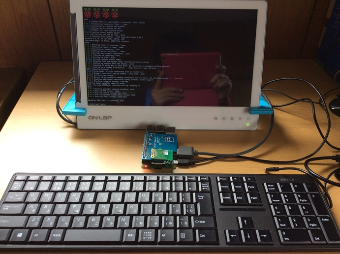
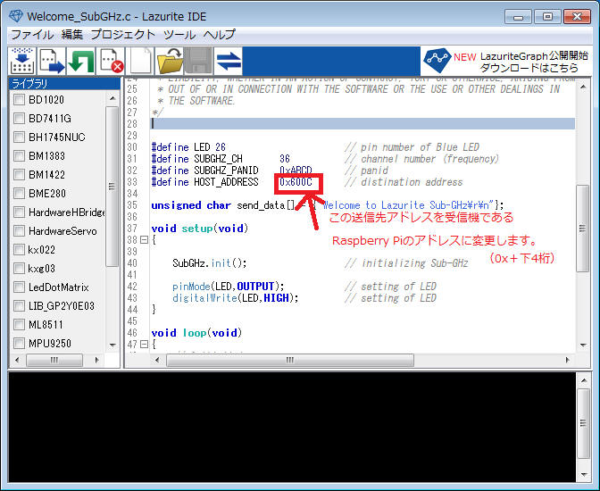
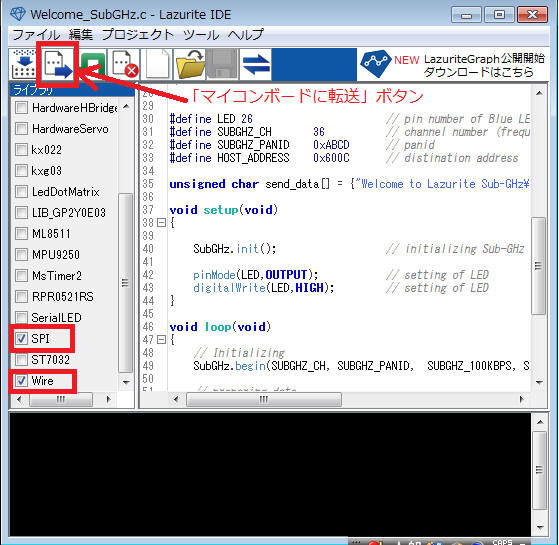
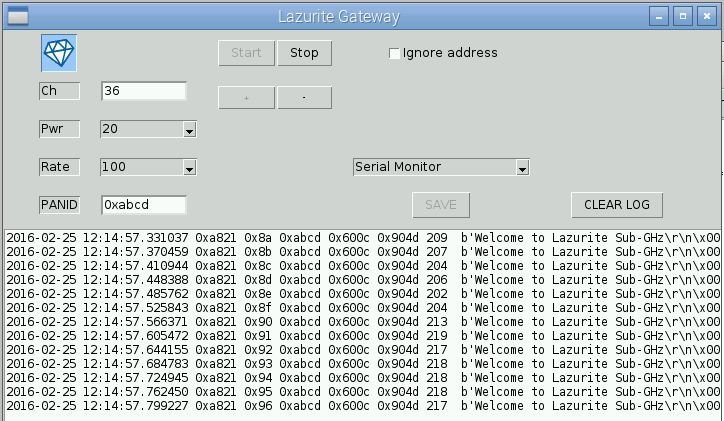

Lazurite Pi Gatewayの立上げ方法/使用方法
Lazurite Pi Gatewayの立上げ方法/使用方法
ここでは、Lazurite Pi Gatewayの立ち上げ方法と使用方法について説明します。
Raspberry Pi用イメージファイルのダウンロード
事前準備として、Raspberry Pi用のイメージファイルをダウンロードしておきます。
1. Raspberry Pi用のイメージファイルをダウンロードします。次のページを開きます。
Lazurite ホームページ
2．LazuriteのTOPページ上部の「ダウンロード」をクリックします。
3．お持ちのRaspberry Pi のタイプにあわせてイメージファイルを選び、「ダウンロード」をクリックします。
ここでは、Raspberry Pi2用のファイル（xxxxxx_rpi2.zip）で説明します。
RaspberryPi B+/A＋を選択した場合は、ファイル名はxxxxxx_rpi.zipになります。
4．ダウンロードしたZIPファイルを解凍し、次のファイルを展開しておきます。
win32DiskImagerのダウンロードとインストール
事前準備として、イメージファイルの書き込みソフトであるwin32DiskImagerをダウンロード、インストールしておきます。
１．次のページを開きます。
Win32DsikImager
ダウンロード
２．「ダウンロードファイル一覧」をクリックします。

3．一覧から「Win32DiskImager-0.9.5-install.exe」をクリックし、
ダウンロードします。
4．ダウンロードしたファイルを右クリックし、「管理者として実行」を選択します。
5．次のセットアップウィザードが表示されますので、画面の通りに進めてください。「Next」をクリックします。

6．「I accept the agreement」をクリックし、「Next」をクリックします。
７．「Next」をクリックします。
８．「Next」をクリックします。

9．「create a desktop icon」にチェックを入れ、「Next」をクリックします。
10．「Install」をクリックします。
11．「Finish」をクリックします。

これでwin32DiskImagerをインストールできました。
MicroSDカードへのイメージファイルの書き込み
win32DiskImageを使ってRaspberry Pi のイメージファイルをMicroSDカードへ書き込みます。
1．パソコンにMicroSDカードをセットします。
２．WindowsのプログラムメニューからWin32DiskImagerを右クリックし、「管理者として実行」を選択します。

3．ファイルマークをクリックします。
4．イメージファイルxxxxxx_rpi2.imgを選択し、「開く」をクリックします。
5．「Write」をクリックして、マイクロSDカードにイメージファイルを書き込みます。
6．「Yes」をクリックします。

７．書き込みが終了すると次の画面が表示されるので「OK」をクリックします。
８．「Exit」をクリックしてWin32DiskImagerを終了します。

Lazurite Pi Gatewayの立ち上げ方法
Lazurite Pi Gatewayの立ち上げ方法について説明します。
1. Raspberry PiとLazurite Pi Gatewayを次のように組み立てます。
組み立て前
組み立て後

配線後
MicroSDの差し込み

2. Raspberry PiにDCアダプタを接続し、電源を入れます。

Raspberry Piが立ち上がります。

3. ディスク容量を拡張します。以下、モニタ画面で操作します。
4．Raspberry Piへログインします。
次のように入力します。
Raspberry Pi login: pi⏎
Password: raspberry⏎ (パスワードは初期設定のままです。ここで入力しても文字は表示されません。）
<<<<<<< HEAD
５. コンソール画面が起動したら raspi-configを起動します。pi@raspberry~$ のあとに次のコマンドを入力します。
=======
<<<<<<< HEAD
５. コンソール画面が起動したら raspi-configを起動します。pi@raspberry~$ のあとに次のコマンドを入力します。
=======
５. コンソール画面が起動したら raspi-configを起動します。pi@raspberry~$ のあとに次のコマンドを入力します。
>>>>>>> f0629d34ef36f0326a2385f0c73a0b84aa046239
>>>>>>> efdc002de097643a9f7e42522ff9730a5378daf1
sudo raspi-config⏎
次の画面が表示されます。

５. ディスク容量を拡張するので、「1. Expand Filesystem」を選択して「enter」キーを押します。
6. 「<OK>」を選択して「enter」キーを押します。

これでディスク容量が拡張されました。
7. 再起動します。「<Finish>」を選択します。

８.「<Yes>」を選択して「enter」キーを押します。

これで再起動されました。
コマンド入力で再起動をする方法（1）
手順8で「<No>」を選択して「enter」キーを押し、次のコマンドを入力することでも再起動できます。
再起動: sudo reboot⏎
コマンド入力で再起動をする方法（2）
シャットダウンしてから再起動する方法は次の通りです。
次のコマンドを入力することで、シャットダウンできます。
シャットダウン: sudo shutdown -h now⏎
シャットダウンしたら、DCアダプタを抜いて電源を切ります。
もう一度DCアダプタをつないで電源を入れると、再起動できます。
Lazurite Pi Gatewayの使用方法
ここでは、Lazurite Sub-GHzからデータを送信し、Lazurite Pi
Gatewayで受信する方法について説明します。
Lazurite Sub-GHzの準備
Lazurite Sub-GHzからデータを送信する手順を説明します。
１. Lazurite Sub-GHzに無線モジュールを接続します。
１. USBケーブルでPCとLazurite
Sub-GHzを接続します。
２. サンプルプログラムである「Welcome_SubGHz」をLazurite
Sub-GHzに書き込みます。 Windowsのプログラムメニューから、Lazurite IDEを起動します。
3. Lazurite IDEの「ツール」メニューから「シリアル通信」、「通信ポート」を選択し、「COMxxx」を選択します。
4.「ファイル」メニューから「プロジェクトのサンプル」、「03.SubGHz」を選択し、「Welcome_SubGHz
」を選択します。
サンプルプログラムが表示されます。
５.サンプルプログラムの受信機のアドレス（HOST_ADDRESSのアドレス部分）を、受信機である
Raspberry Piのアドレスに変更します。

アドレスの記載場所
6.「マイコンボードに転送」ボタンをクリックします。

正常にコンパイルが完了するとコンソール画面に
onvert success
boot mode
start upload...
というメッセージが表示されます。
これでサンプルプログラム「Welcome_SubGHz 」の書き込み化が完了し、送信機であるLazurite
Sub-GHzの準備ができました。
1秒に1回、青色のLEDが点滅し、
920MHz帯の周波数で、"Welcome to
Lazurite Sub-GHz"というメッセージを送信しています。
Lazurite Pi Gatewayでの受信
Lazurite Pi Gatewayで"Welcome to Lazurite
Sub-GHz"というメッセージを受信するには、Rubyを利用する場合とPythonを利用する場合の2通りがあります。ここでは順番に受信方法を説明します。
受信方法1.Rubyの場合
サンプルプログラムの受信
1.Lazurite Pi Gatewayを立ち上げます。
2.次のコマンドを入力し、ドライバを有効にします。
sudo insmod ~/driver/sub-ghz/DRV_802154.ko
3.rubyのフォルダに移動し、SerialMonitorを起動します。
cd ruby⏎
sudo ./SerialMonitor.rb⏎
次のようなメッセージを受信したら成功です。「CTRL」ボタンを押しながら「C」押すと、
アプリケーションを終了できます。

sudo
は管理者権限でプログラムを実行するためにつけるコマンドです。
ドライバからデータを読み込むために管理者権限が必要になります。
4.ドライバを無効にして終了します。次のコマンドを入力し、ドライバを無効にします。
sudo rmmod DRV_802154⏎
Lazurite Sub-GHzから信号を出した状態のままアプリケーションを終了して放置すると、
メモリーに受信データが保存され続けてしまい、システムが不安定になる可能性があります。
そのため、使用しない場合はドライバーを一度、uninstallしてください。
アプリケーションの終了
「CTRL」ボタンを押しながら「C」押すと、
アプリケーションを終了できます。
ドライバの無効化
次のコマンドでドライバを無効にしたり有効にしたりできます。
| ドライバ無効化する方法 |
sudo rmmod DRV_802154⏎ |
| ドライバを有効化する方法 |
sudo insmod ~/driver/sub-ghz/DRV_802154.ko |

受信方法2．Pythonの場合
1.Lazurite Pi Gatewayを立ち上げます。
2.次のコマンドを入力し、GUI画面を立ち上げます。
startx
3.Raspberry Pi のデスクトップ画面から「Menu」、「Programming」を選択し、「Python3」を選択します。

3．「File」から「Open」を選択します。
4．「python」から「gateway.py」を選択し「Open」をクリックします。

5.[Run]から[Run Module]をクリックします。

6．「Start」ボタンをクリックします。

Lazurite Sub-GHzから送信された「Welcome to Lazurite
Sub-GHz」のメッセージが表示されます。

7.「Stop」ボタンをクリックします。
アプリケーションが終了します。
STOPしないとアプリケーションを終了することが出来ません。